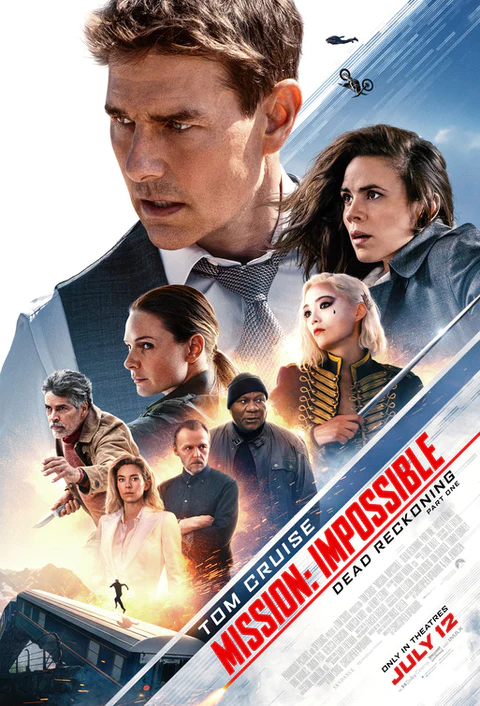

|

PG-13 |
Mission: Impossible - Dead Reckoning Part OneIn Mission: Impossible - Dead Reckoning Part One, Ethan Hunt (Tom Cruise) and his IMF team embark on their most dangerous mission yet: To track down a terrifying new weapon that threatens all of humanity before it falls into the wrong hands. With control of the future and the fate of the world at stake, and dark forces from Ethan's past closing in, a deadly race around the globe begins. Confronted by a mysterious, all-powerful enemy, Ethan is forced to consider that nothing can matter more than his mission - not even the lives of those he cares about most. |
Cast |
Tom Cruise | Ethan Hunt |